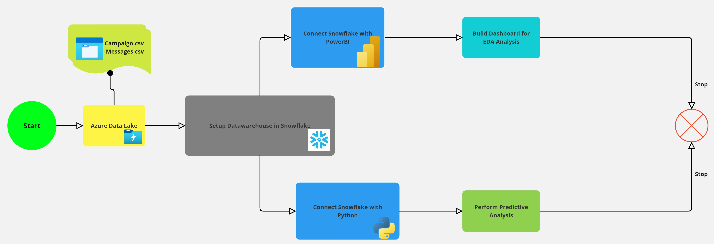
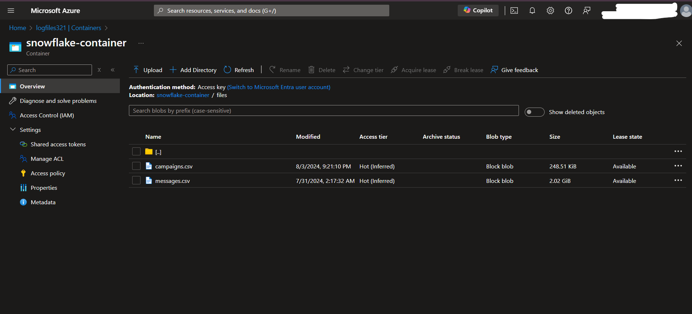
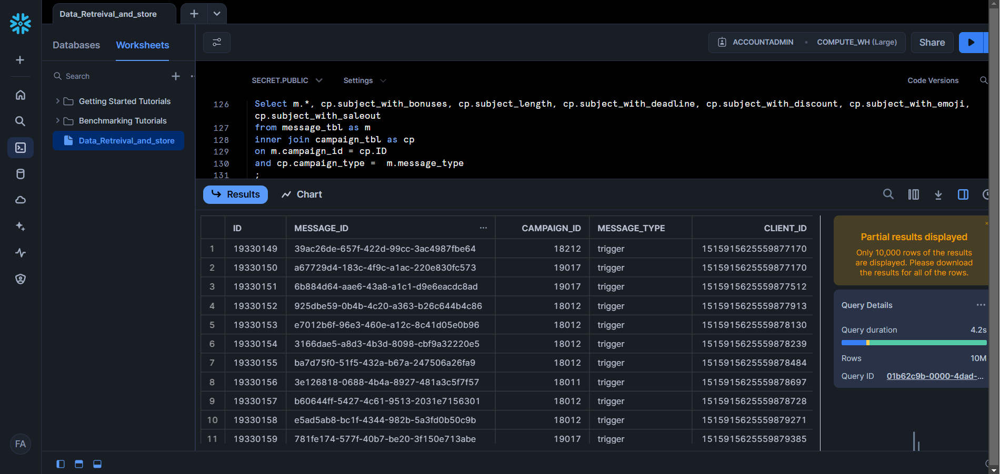
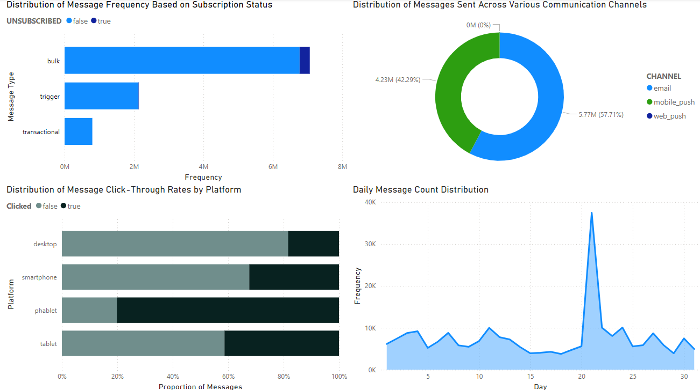
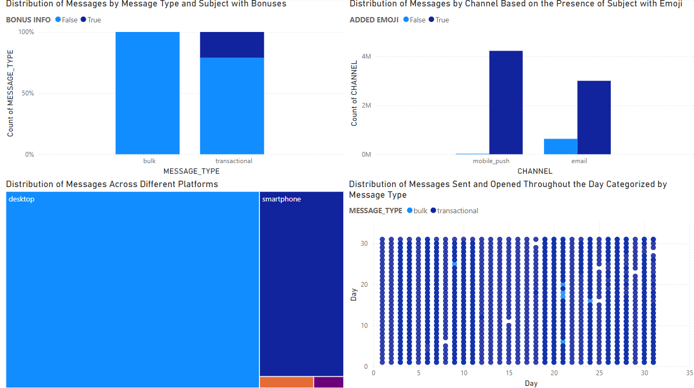
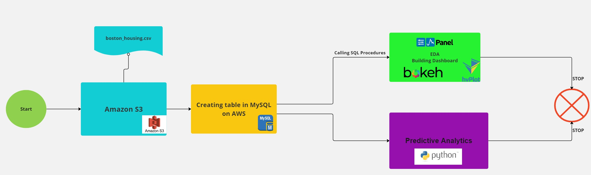

Message Distribution Analysis
Introduction
In a bustling digital marketplace, a medium-sized retail company weaves an intricate tapestry of communication with its customers. This project, Message Distribution Analysis, delves into a dynamic dataset spanning two years, capturing the multifaceted nature of customer interactions through various channels: emails, web push notifications, mobile alerts, and SMS.
Through this analysis, we uncover the stories behind bulk campaigns, trigger campaigns, and transactional messages. Each message becomes a living entity, revealing insights into reach, engagement, and the ultimate conversion of interest into action.
Data Storage and Extraction
The initial dataset, comprising campaign and message information in CSV format, is stored in Azure Data Lake. The data is then extracted to Snowflake, where a structured data warehouse environment is constructed to support detailed analysis and reporting.
Data Transformation and Consolidation
Within Snowflake data warehouse, data transformation processes merge campaign and message data, forming a consolidated dataset named "message_extended". This consolidated data allows for a comprehensive view of each message's journey, from delivery to customer engagement.
Data Visualization
Utilizing Power BI, we connect to the "message_extended" table in Snowflake to create insightful visualizations. These visualizations help stakeholders make data-driven decisions to optimize future marketing campaigns.
 Data Preparation and Feature Engineering
Data is cleaned and transformed in Python, where categorical variables are encoded, and time-based features are created. To address class imbalance in the target variable 'IS_OPENED', we apply SMOTE, enhancing the predictive power of our models.
Machine Learning Models
Multiple models, including LightGBM, Random Forest, Gradient Boosting, and Logistic Regression, are implemented to predict customer engagement. Among these, Gradient Boosting demonstrated superior performance, effectively predicting both classes of the target variable with 71% accuracy.
Conclusion and Impact
This project illustrates the power of data-driven decision-making in modern digital marketing. By analyzing the dynamics of message distribution and customer engagement, companies can optimize their communication strategies, reduce churn, and increase conversion rates. The integration of advanced technologies like Azure Data Lake, Snowflake, and Power BI with predictive analytics showcases the potential for building scalable, impactful solutions in the realm of data science and analytics.